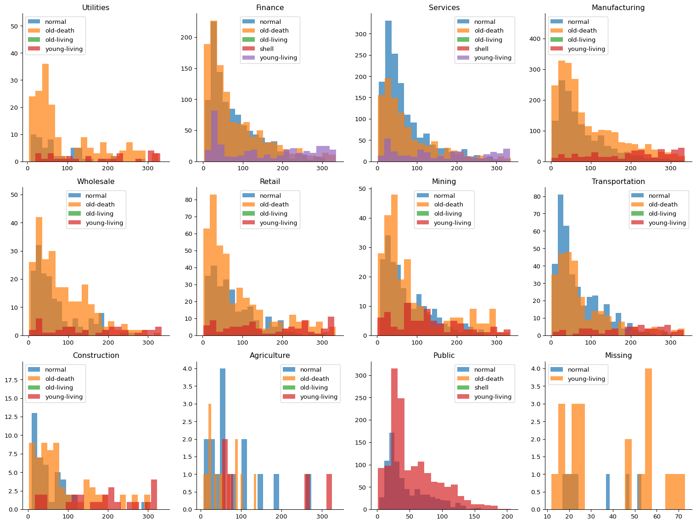
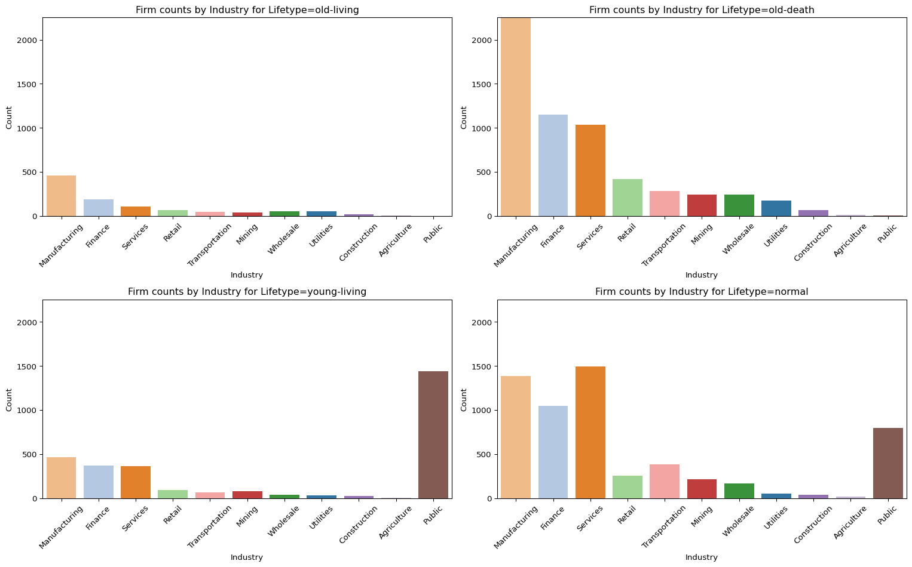

# crsp_full[crsp_full['permno']==90848] # permno, 제대로된 lifetype, 현재 lifetype, 현재 life, 입력 crsp_trunc 레코드가 2개 존재함# 30330, old-death, lifetype=old-death,life=2, first record date = sample_start# 14252, shell, lifetype= normal, life=2, sample_start < first record date < sample_end# 13010, shell, lifetype= normal, life=2, sample_start < first record date < sample_end# 90848, shell, lifetype= normal, life=2, sample_start < first record date < sample_end# Refco Inc, 90848# permno, 제대로된 lifetype, 현재 lifetype, 현재 life, 이 경우는 입력 crsp_trunc 레코드가 1개만 존재함# 15139, young-living, lifetype= shell, life=1, first record date = sample_end# 16815# crsp[crsp['permno']==14475] # Super Micro Computer (SMCI)라는 회사만 2019 상장폐지 후 2020년 재상장시 Permno (14475)가 유지되었다result = crsp_full.groupby('lifetype')['permno'].nunique()print(result)import matplotlib.pyplot as pltimport seaborn as sns# Group by permno to get unique records for plotting (1 row per permno)permno_summary = ( crsp_full.sort_values("date") .groupby("permno", as_index=False) .first() [["permno", "industry", "lifetype", "life", "state"]])
# FacetGrid 생성g = sns.FacetGrid(permno_summary, col="industry", col_wrap=4, height=4, sharex=False, sharey=False)# industry 이름 리스트industry_names = g.col_names# 각 subplot에 대해 데이터 분할 및 그리기for ax, industry inzip(g.axes.flat, industry_names): data = permno_summary[permno_summary['industry'] == industry]for lifetype, lifetype_data in data.groupby('lifetype'): ax.hist(lifetype_data['life'], bins=20, alpha=0.7, label=lifetype) ax.set_title(industry) ax.legend()plt.tight_layout()plt.show()

4 Firm counts per Industry for Each Lifetype
Code
# 주요 lifetype만 사용main_lifetypes = ['old-living', 'old-death', 'young-living', 'normal']filtered_data = permno_summary[permno_summary['lifetype'].isin(main_lifetypes)]# industry 순서: old-death 기준industry_order = ( filtered_data[filtered_data['lifetype'] =='old-death']['industry'] .value_counts() .index.tolist())# 전체 industry 목록 확보all_industries = filtered_data['industry'].unique().tolist()# industry에 대한 색상 팔레트 생성palette_colors = sns.color_palette("tab20", len(all_industries))palette =dict(zip(all_industries, palette_colors))# y축 최대값: old-death 기준y_max = ( filtered_data[filtered_data['lifetype'] =='old-death']['industry'] .value_counts() .max())# 서브플롯 설정fig, axes = plt.subplots(2, 2, figsize=(16, 10))axes = axes.flatten()for i, lifetype inenumerate(main_lifetypes): ax = axes[i] subset = filtered_data[filtered_data['lifetype'] == lifetype] sns.countplot( data=subset, x='industry', hue='industry', order=industry_order, palette=palette, ax=ax ) ax.set_title(f"Firm counts by Industry for Lifetype={lifetype}") ax.set_ylabel("Count") ax.set_ylim(0, y_max +5) ax.tick_params(axis='x', rotation=45) ax.set_xlabel("Industry")# 여분 subplot 제거for j inrange(len(main_lifetypes), len(axes)): fig.delaxes(axes[j])plt.tight_layout()plt.show()

5 Newly listed Firms per Initial Decile by Industry